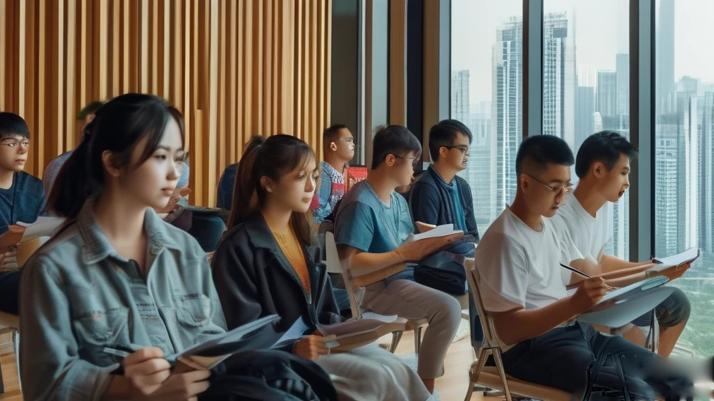

圖片由 AI輔助創作Image by AI
【鄭哥點評】欄目：鄭哥博客點評｜日期：2026-11-14
十一月過咗一半，廣深兩地出的文件講的唔係派幾多錢，而係錢幾時到手。深圳把政府採購預付款三成寫入十一月一日生效的條例；省人社廳一千個老闆進修名額十一月二十日關閘；省商務廳把汽車以舊換新申請推到明年一月十日。
圖片由 AI輔助創作Image by AI
一、預付款三成寫進法規：深圳唔再只係派錢
深圳市人大九月一日修訂通過、十一月一日施行的《深圳經濟特區中小企業發展促進條例》。最實際一條唔在補貼金額，在賬期：鼓勵採購人把面向民營中小企的合同預付款提高到合同金額三成以上。政府、國企採購的錢過去壓幾個月甚至一年，現在法規寫明先付三成。
另外兩條要記低：模型券、語料券寫入法規；龍頭企業牽頭科研項目，要按比例吸納中小企、分配研發經費。我判斷：券只抵扣一部分，深圳現行模型券按購買費用三成抵、單企每年上限一百萬，還要先簽合同拿發票；接政府項目的小公司，「預付款三成」比多一筆獎補更救命——獎補等驗收，預付款開工就有。
來源：深圳特區報《新修訂的〈深圳經濟特區中小企業發展促進條例〉獲通過》，2026年9月3日｜https://fgw.sz.gov.cn/ztzl/qtztzl/szscjmyjjfzzhfwpt/hwtz/ggfw/zczc/content/post_12973228.html

圖片由 AI輔助創作Image by AI
二、一千個老闆位，五日後關閘
廣州市人社局十一月十一日掛通知：省人社廳二〇二六年度初創企業經營者能力提升培訓開始報名，全省遴選一千名，對象係省內登記五年內的企業法定代表人、投資人、董事長、總經理等，個體工商戶可報「百千萬工程」特色班。
六個專題，其中「經營管理提升」下有「人工智能 OPC」青創班，另有灣區融合、數智化轉型、創業融資等。十二月到明年六月上課，五十六學時即七日，地點廣州、深圳、珠海、肇慶。
門檻：每戶限報一人、限選一個專題；往年參加過省級同項目的學員及同企業人員不得報名；失信、經營異常企業不錄取。十一月二十日二十四時截，製造業、涉農、港澳青創、雙創獲獎主體優先。我嘅建議：價值唔在課堂，在同期同學同「優秀學員優先推薦融資對接」，但五日內要備齊蓋章件。
來源：廣州市人力資源和社會保障局《2026年度廣東省初創企業經營者能力提升培訓開始報名！》，2026年11月11日｜https://rsj.gz.gov.cn/zwdt/tzgg/content/post_11097220.html
圖片由 AI輔助創作Image by AI
三、深圳的公司，廣州的國資：一筆電子皮膚的錢
十一月五日《科創板日報》報道，賽感科技（深圳）完成數千萬元 Pre-A++ 輪，由廣州工控東高基金獨家投資，用於離電柔性技術研發同產品迭代。
公司二〇二三年成立，總部南山，做柔性智能傳感器同電子皮膚，技術源自南方科技大學超柔性電子團隊。產品係指尖模組同全尺寸人形機器人電子皮膚，首批訂單已落地汽車製造。
值得留意嘅係出資方：深圳公司拿廣州國資的錢。同賽道十一月靈樞智膚完成超千萬種子輪，十月矩僑工業完成億元級 A 輪。我判斷：廣州、深圳、東莞國資都開始自己做早期出資人，錢耐、唔催退出，代價係落地要求——訂單、產線、第二總部多數寫入條款。
來源：科創板日報《賽感科技獲數千萬元Pre-A++輪融資 廣州工控東高基金獨家投資》，2026年11月5日｜https://finance.eastmoney.com/a/202611053923059937.html
圖片由 AI輔助創作Image by AI
四、以舊換新兩道閘：汽車到明年一月，家電卡在年底
廣東省商務廳十一月十三日公告，講清二〇二六年消費品以舊換新補貼截止時間：汽車以舊換新申請截止二〇二七年一月十日二十四時，要補正材料的到一月二十日，逾期不補。
憑證時間卡死：報廢更新的回收證明、注銷證明、銷售發票、登記證書四樣，都要在二〇二六年一月一日至十二月三十一日期間取得；置換更新的二手車發票、新車發票同登記日期，同樣要落在今年內。
家電、數碼同智能產品購新、地方自主品類，活動截止二〇二六年十二月三十一日，支付日同發票日都要在期內；地市更早截止以地市為準。做零售、做經銷的，呢條係開票倒數：開唔到票，貨賣咗都拿唔到補貼。
來源：廣東省商務廳《關於廣東省2026年消費品以舊換新補貼申報截止時間的公告》，2026年11月13日｜https://www.21jingji.com/article/20261113/herald/21a122062a30dbadd9bf6571b07c1cb9.html
圖片由 AI輔助創作Image by AI
五、四百六十億，頭五家吃了三成七
鈦媒體六月復盤用 IT 桔子數據算今年上半年具身智能及機器人投融資：二百八十八起、披露金額超四百六十億。
頭五家（千尋智能、曦望、星海圖、自變量機器人、極佳視界）約一百七十一億，佔三成七；頭二十家吃七成，其餘二百多家分一百二十四億；種子同天使輪不到十三億，佔全賽道百分之三。
出錢的人也換了：十億以上大額融資，產業大廠資本同地方國資參投或領投超過四成。我判斷：對草根唔係冇機會，而係唔好照頭部燒錢——頭部用錢買時間，你只能用人均產出買時間。
來源：鈦媒體《2026年上半年，460億砸向具身智能，只「養肥」20家企業？》，2026年6月15日｜https://www.tmtpost.com/8028097.html
圖片由 AI輔助創作Image by AI
六、鄭哥點評
五條擺埋一齊，共同點係：下半年開始，政策同資本都唔再問你有幾多決心，而係問你有幾多可以驗證的東西——預付款要合同、券要發票、培訓要蓋章件、補貼要年內憑證、融資要首批訂單。
所以我咁排：一，翻手上政府或國企合同，睇可否改三成預付款，唔使申請、唔使等名額；二，十一月二十日前備齊進修材料；三，十二月三十一日前該開的票全部開完，做零售、汽車、家電經銷的最易漏。
錢在收緊，門未關。年尾四十幾日，比的唔係邊個計劃靚，係邊個文件齊。
圖片由 AI輔助創作Image by AI
\[Zheng Ge's Take\] Column: Zheng Ge's blog commentary | Date: 2026-11-14
We are halfway through November, and the documents coming out of Guangzhou and Shenzhen this week are not about how much money is being handed out, but about when the money actually arrives. Shenzhen has written a 30 per cent advance payment on public procurement contracts into law, effective 1 November. The provincial human resources department has opened 1,000 places for founders to spend seven days in a classroom, with the door shutting on 20 November. On the same day, the provincial commerce department pushed the deadline for car trade-in subsidies to 10 January 2027. Put the three together and I hear one sentence: before the year ends, move faster than the paperwork.
圖片由 AI輔助創作Image by AI
1. A 30 per cent advance payment written into law: Shenzhen is no longer just handing out cash
The Shenzhen Special Economic Zone regulation on promoting small and medium-sized enterprises, revised and passed by the municipal legislature on 1 September and in force since 1 November, runs to eight chapters and 58 articles. Its most practical provision is not about subsidy amounts but about payment terms: it encourages buyers to raise the advance payment on contracts with private SMEs to more than 30 per cent of contract value. Government and state-owned enterprise money used to sit for months, sometimes a year; now a regulation says pay 30 per cent up front.
Two other clauses are worth noting. First, model vouchers and corpus vouchers are now written into law, letting the technology, industry and data departments support SME use of computing power, models and training data. Second, when a leading company takes the lead on a research project, it must bring SMEs in and allocate research funding to them in proportion. Add preferential access for SMEs to large publicly funded research instruments and an innovation scoring system, and several more doors have been opened.
Vouchers are useful, but they only cover part of the cost. Under the current model voucher scheme, 30 per cent of a model purchase is offset, capped at 1 million yuan a year per company and 2 million at most, and only with a registered provider, a signed contract and an invoice. My read: for firms doing engineering, systems integration or government projects, the 30 per cent advance payment saves more lives than another grant. A grant waits for acceptance; an advance payment arrives when work starts.
Source: 深圳特區報《新修訂的〈深圳經濟特區中小企業發展促進條例〉獲通過》，2026年9月3日 | https://fgw.sz.gov.cn/ztzl/qtztzl/szscjmyjjfzzhfwpt/hwtz/ggfw/zczc/content/post_12973228.html
圖片由 AI輔助創作Image by AI
2. One thousand places for founders, closing in five days
The Guangzhou human resources bureau posted the notice on 11 November: registration has opened for the provincial 2026 training programme for founders of early-stage companies, with 1,000 places funded across Guangdong. Applicants must be the legal representative, investor, chairman, general manager, director, supervisor or director-level officer of a private company, non-profit service unit or farmers cooperative registered in the province within the past five years. Sole traders can apply to the rural revitalisation class.
There are six tracks. Under management improvement sits an artificial intelligence one-person-company class; the others cover Greater Bay Area integration (including Hong Kong and Macao founders), business model innovation, digital transformation, fundraising practice, and technology finance. Classes run from December to June, 56 taught hours over seven days, in Guangzhou, Shenzhen, Zhuhai and Zhaoqing, with at least three provincial study visits and matchmaking sessions.
Three limits: one person per company, one track only; anyone who attended the same provincial programme in earlier years, and colleagues at their company, are excluded; companies with serious credit violations, abnormal operating status or defaulting debtors are not admitted. Registration closes at 24:00 on 20 November, and selection is by document review plus a composite score, with manufacturing, agriculture, Hong Kong-Macao and competition-winning applicants prioritised. My advice: the real value is not the classroom but the cohort and the line about outstanding graduates being recommended for competitions and fundraising. You have five days to get stamped scans, licences and degree certificates together.
Source: 廣州市人力資源和社會保障局《2026年度廣東省初創企業經營者能力提升培訓開始報名！》，2026年11月11日 | https://rsj.gz.gov.cn/zwdt/tzgg/content/post_11097220.html
圖片由 AI輔助創作Image by AI
3. A Shenzhen company, Guangzhou state capital: the money behind electronic skin
On 5 November the STAR Market Daily reported that Saigan Technology, based in Shenzhen, closed a Pre-A++ round in the tens of millions of yuan, invested solely by the Guangzhou Industrial Holdings Donggao Fund. The money goes into iontronic flexible technology and the next generation of products.
Founded in 2023 and headquartered in Nanshan, the company makes high-performance flexible smart sensors and electronic skin. Its technology comes out of an ultra-flexible electronics group at the Southern University of Science and Technology, and its core team includes more than twenty PhDs and postdoctoral researchers. The products are fingertip modules and a full-size humanoid electronic skin system that conforms to curved surfaces and ships pre-calibrated. A first batch of orders has been placed in car manufacturing, with applications extending to industrial inspection and safety sensing.
What is worth watching is who wrote the cheque: a Shenzhen company taking Guangzhou industrial state capital. In the same niche, Lingshu Zhifu raised more than 10 million yuan in seed and angel money in November from investors including Oriza Holdings and Hubble Investment, while Juqiao Industrial closed a 100-million-yuan A round in October with Ant Group and Fosun Rui Zheng participating. My read: state capital in Guangzhou, Shenzhen and Dongguan is now acting as an early-stage investor itself. The money is patient and does not chase a quick exit, but the price is local delivery: orders, production lines, a second headquarters, usually written into the terms. Before you take it, decide what you are willing to hand over.
Source: 科創板日報《賽感科技獲數千萬元Pre-A++輪融資 廣州工控東高基金獨家投資》，2026年11月5日 | https://finance.eastmoney.com/a/202611053923059937.html
圖片由 AI輔助創作Image by AI
4. Two trade-in deadlines: cars into January, appliances by year end
The Guangdong commerce department issued a notice on 13 November setting out the cut-off dates for the 2026 consumer trade-in subsidies. For cars, applications close at 24:00 on 10 January 2027; anyone who has applied but needs to correct documents has until 24:00 on 20 January 2027, after which no subsidy is paid.
The paperwork dates are strict. For scrappage, the recycling certificate, the vehicle cancellation certificate, the vehicle sales invoice and the registration certificate must all be obtained between 1 January and 31 December 2026. For replacement purchases, the used-car sales invoice, the new-car invoice, the date of the most recent transfer registration of the old car and the registration date of the new car must all fall inside this year.
For appliances, digital and smart devices and locally designated categories, the scheme closes on 31 December 2026, with both payment and invoice dates inside the window; where a city has set an earlier date, the city notice prevails. For anyone running a shop, a dealership or store operations, this is a countdown on stocking and invoicing: no invoice before 31 December, no subsidy even if the goods were sold.
Source: 廣東省商務廳《關於廣東省2026年消費品以舊換新補貼申報截止時間的公告》，2026年11月13日 | https://www.21jingji.com/article/20261113/herald/21a122062a30dbadd9bf6571b07c1cb9.html
圖片由 AI輔助創作Image by AI
5. Of 46 billion yuan, the top five took 37 per cent
A review published by TMTPost in June used IT Juzi data to count China embodied AI and robotics deals in the first half of the year: 288 rounds involving 226 companies and 274 investors, with disclosed funding above 46 billion yuan.
The split is lopsided. The top five — Qianxun Intelligence, XiWang Sunrise, Galbot, Zibianliang Robot and Jijia Shijie — took about 17.1 billion yuan, or 37 per cent of the total. The next five took 7.2 billion, and numbers 11 to 20 took 7.9 billion. In other words the top 20 absorbed roughly 70 per cent, leaving more than 200 companies to split 12.4 billion, a few tens of millions each. Seed and angel rounds numbered 73 and raised under 1.3 billion combined, three per cent of the sector.
The cheque writers have changed too. In rounds above 1 billion yuan, corporate venture arms and local state capital or government guidance funds participated or led more than 40 per cent of the time, with Baidu, ByteDance, Xiaomi, Meituan, SAIC, Inovance, Yizhuang Guotou, Hangzhou Capital and Changzhou High-tech Investment appearing most often. My read: for an ordinary founder this structure does not mean there is no chance, it means do not copy the leaders and burn cash. They buy time with money; you can only buy time with output per head.
The sector is still moving in November: Lingshu Zhifu closed seed and angel money above 10 million yuan, Juqiao Industrial a 100-million-yuan A round, Saigan Technology a Pre-A++. The money has not stopped, but it is concentrating in companies with orders and verified use cases.
Source: 鈦媒體《2026年上半年，460億砸向具身智能，只「養肥」20家企業？》，2026年6月15日 | https://www.tmtpost.com/8028097.html
圖片由 AI輔助創作Image by AI
6. Zheng Ge's Take
Put the five together and I see one common thread. Since the second half of the year, policy and capital both stop asking how determined you are and start asking what you can prove: an advance payment needs a contract, a voucher needs an invoice, a training place needs stamped scans, a subsidy needs documents dated inside this year, a funding round needs a first batch of orders.
So this is how I would order the priorities. First, go through the government or state-owned enterprise contracts you already hold and see whether the advance payment can be lifted to 30 per cent; that needs no application and no quota, and it is the most direct. Second, get the training paperwork ready before 20 November; 1,000 places is not many, and the list of priority applicants is spelled out clearly. Third, issue every invoice that should be issued before 31 December, especially if you run retail, a car dealership or an appliance business; it is the easiest thing to forget and the most concrete money on the table.
The money is tightening, but the door is not shut. Over these last forty days of the year, the question is not whose plan looks best on paper, but whose documents are complete, whose invoices go out early and whose contracts get amended first.